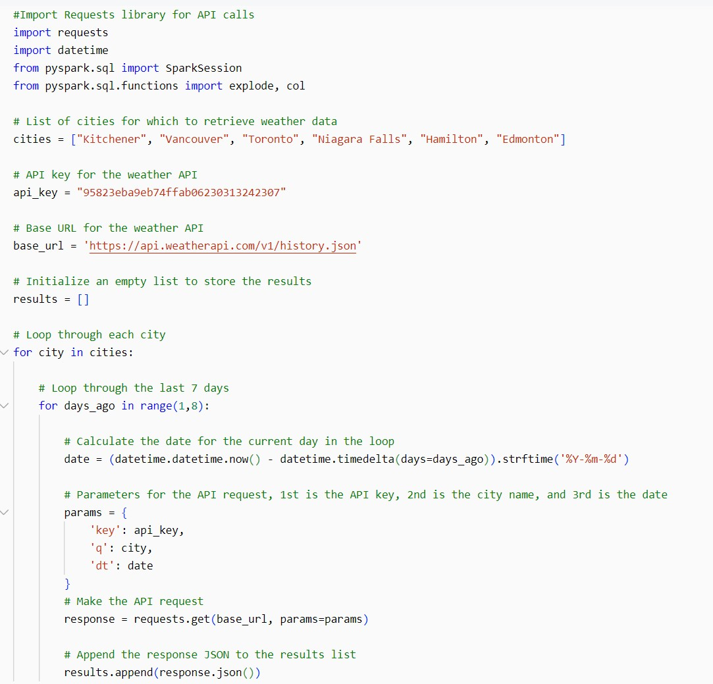
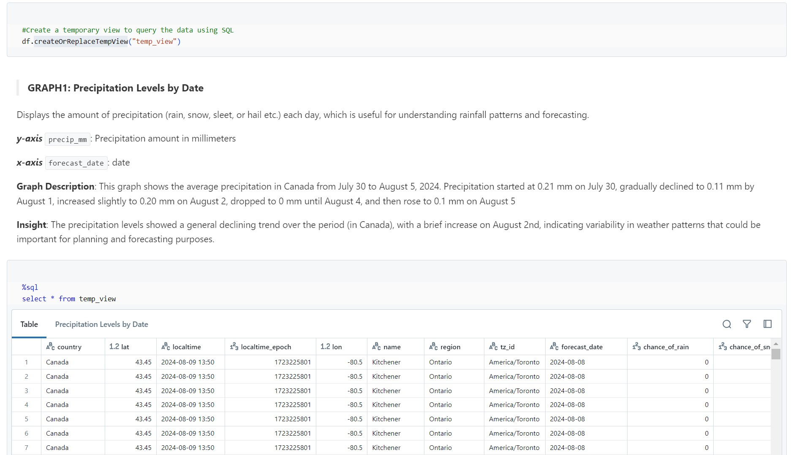

Go Back
The Databricks Weather API project focuses on the extraction, transformation, and loading (ETL) of data from the Weather API using PySpark, SQL, and Databricks Dashboard.

About Market Stack
1) Marketstack is a financial market data API that provides real-time, intraday, and historical stock market data.
2) Marketstack offers API of a stock market data solution for both developers and companies.
3) Marketstack API support more than 170,000 stock tickers from more than 70 global stock markets.
Reference Links:
https://www.weatherapi.com/docs/
Data Extracted:
From 02-Aug-2024 to 08-Aug-2024
Problem Statement:
Climate change has emerged as a significant threat to humanity, underscored by recent events such as the extensive fire in Alberta (2024) and heavy rainfall in Mississauga (2024). This project seeks to analyze historical weather data from multiple cities (such as Kitchener, Vancouver, Toronto, Niagara Falls, Hamilton, Edmonton) to deliver valuable insights that inform decision-making across various sectors. By evaluating weather reports, major Canadian cities can improve traffic management, enhance emergency preparedness, support agricultural best practices, and strengthen recovery efforts following disasters. Furthermore, this analysis plays a critical role in mitigating health risks associated with adverse weather conditions. Ultimately, the project tackles the challenge of interpreting large datasets to enhance the understanding and prediction of weather-related impacts.
Utilized functionality in Databricks:
• REST API Support
• Databricks Dashboard Visualization
• Databricks’ Data Profiling
• Databricks Python
• Temporary View
• Databricks SQL
• PySpark
• Compute
• Workspace
• Notebooks
Project Description: Developed a Databricks-based solution using PySpark, Python, and SQL to fetch, process, and visualize historical weather API data for multiple cities (such as Kitchener, Vancouver, Toronto, Niagara Falls, Hamilton, Edmonton), enabling actionable insights for data-driven decision-making and trend analysis. The project involved parsing JSON responses and converting them into structured Pandas DataFrames for analysis. Data cleaning and transformation were conducted using PySpark and Databricks' Data Profiling feature to prepare the datasets for visualization. Additionally, visualizations were created to identify trends and key insights, resulting in a comprehensive dashboard within the Databricks environment to enhance analysis and decision-making.
Here are some key insights:
1) Precipitation Levels by Date: The precipitation levels showed a general declining trend over the period (in Canada), with a brief increase on August 2nd, indicating variability in weather patterns that could be important for planning and forecasting purposes.
2) Analyzing Temperature Trends Over Forecast Dates by Region: Edmonton and Vancouver had lower average temperatures than other major regions, showing unique weather patterns that could affect local ecosystems and human activities.
3) Temperature Trends Relative to Rainfall and Wind Across All Regions: We observed colder temperatures in Edmonton and Vancouver and noted higher rainfall chances in Edmonton and Niagara Falls, while drier conditions were seen in Hamilton, Kitchener, Toronto, and Vancouver. Additionally, wind speeds were strongest in Edmonton, Kitchener, and Niagara Falls.
Click here to see >> GitHub
